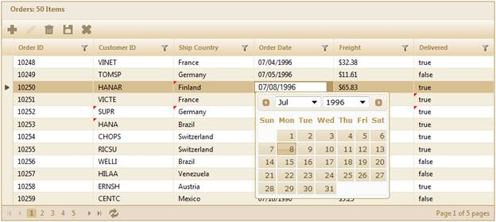

The steps to work with the editing feature through GridBuilder are as follows:
1. Add the MicrosoftMvcValidation.debug.js file in the master page.
|
[ASPX] <head runat="server"> <title><asp:ContentPlaceHolder ID="TitleContent" runat="server" /></title> ……… <script src="<%= Url.Content("~/Scripts/MicrosoftMvcValidation.debug.js") %>" type="text/javascript"></script>
</head> |
2. Create a model in the application.
3. Create a strongly typed view.
4. In the view, use the Model property in the Datasource() to bind the data source.
|
[ASPX] <%=Html.Grid<EditableOrder>("Grid1") .Datasource(Model).ActionMode(ActionMode.JSON)
.Caption("Orders") .Column(column => {
column.Add(p => p.OrderID).HeaderText("Order ID"); column.Add(p => p.CustomerID).HeaderText("Customer ID"); column.Add(p => p.ShipCountry).HeaderText("Ship Country").CellEditType(CellEditType.DropdownEdit); column.Add(p => p.OrderDate).HeaderText("Order Date").Format("{0:MM/dd/yyyy}"); column.Add(p => p.Freight).HeaderText("Freight").Format("{0:C}"); column.Add(p => p.Delivered).HeaderText("Delivered"); })
%> |
|
[Razor] @{ Html.Grid<EditableOrder>("Grid1") .Datasource(Model).ActionMode(ActionMode.JSON)
.Caption("Orders") .Column(column => {
column.Add(p => p.OrderID).HeaderText("Order ID"); column.Add(p => p.CustomerID).HeaderText("Customer ID"); column.Add(p => p.ShipCountry).HeaderText("Ship Country").CellEditType(CellEditType.DropdownEdit); column.Add(p => p.OrderDate).HeaderText("Order Date").Format("{0:MM/dd/yyyy}"); column.Add(p => p.Freight).HeaderText("Freight").Format("{0:C}"); column.Add(p => p.Delivered).HeaderText("Delivered"); })
.Render();
} |
5. Enable the Excel-like editing mode by setting the edit mode to AutoExcel (or ManualExcel) and configuring the editing property AllowEdit which specifies the action method.
6. This will perform the save operation, as displayed below.
7. Set the TimeSpan property which is used in saving the records automatically after the specified time interval in the AutoExcel edit mode.
|
[ASPX]
<%=Html.Grid<EditableOrder>("Grid1") .Datasource(Model).ActionMode(ActionMode.JSON)
.Editing( edit=>{ edit.AllowEdit(true, "Home/BulkSave");// Specify the action method which will perform the update action. edit.EditMode(GridEditMode.AutoExcel);// Specify the grid edit mode. edit.TimeSpan(3000); edit.PrimaryKey(key => key.Add(p => p.OrderID)); // Add primary key to primary key collections. }) %>
|
|
[Razor] @{ Html.Grid<EditableOrder>("Grid1") .Datasource(Model).ActionMode(ActionMode.JSON)
.Editing( edit=>{ edit.AllowEdit(true, "Home/BulkSave");// Specify the action method which will perform the update action. edit.EditMode(GridEditMode.AutoExcel);// Specify the grid edit mode. edit.TimeSpan(3000); edit.PrimaryKey(key => key.Add(p => p.OrderID)); // Add primary key to primary key collections. }) .Render(); } AS |
8. Essential Grid allows adding new records through grid toolbar items. In this example, AddNew, Edit, Delete, Save, and Cancel buttons have been added as toolbar items as displayed below:
|
[ASPX]
<%=Html.Grid<EditableOrder>("Grid1") .Datasource(Model).ActionMode(ActionMode.JSON)
.ToolBar(tools => { tools.Add(GridToolBarItems.AddNew)// Toolbar item for inserting records. .Add(GridToolBarItems.Edit) )// Toolbar item for editing records. .Add(GridToolBarItems.Delete)// Toolbar item for deleting records. .Add(GridToolBarItems.Update)// Toolbar item for saving records. .Add(GridToolBarItems.Cancel);// Toolbar item for canceling request. }) %> |
|
[Razor] @{ Html.Grid<EditableOrder>("Grid1") .Datasource(Model).ActionMode(ActionMode.JSON)
.ToolBar(tools => { tools.Add(GridToolBarItems.AddNew)// Toolbar item for inserting records. .Add(GridToolBarItems.Edit) )// Toolbar item for editing records. .Add(GridToolBarItems.Delete)// Toolbar item for deleting records. .Add(GridToolBarItems.Update)// Toolbar item for saving records. .Add(GridToolBarItems.Cancel);// Toolbar item for canceling request. }) .Render();
} |
9. In the controller, create a method to save changes as displayed below. In this example, the repository method BulkSave() is used to update records to the data source. In the function below, we can get the list of updated records through the parameter updatedRcds using the bind prefix updatedRecords. In the same way we can get the list of added and deleted records using the bind prefix addedRecords and deletedRecords respectively.
|
Controller ///<summary> /// Used to update the records in the database and refresh the grid. /// </summary> [AcceptVerbs(HttpVerbs.Post)] public ActionResult BulkSave([Bind(Prefix = "updatedRecords")]IEnumerable<EditableOrder> updatedRcds, [Bind(Prefix = "addedRecords")]IEnumerable<EditableOrder> addedRcds, [Bind(Prefix = "deletedRecords")]IEnumerable<EditableOrder> deletedRcds) { if (updatedRcds != null) OrderRepository.Update(updatedRcds); if (addedRcds != null) OrderRepository.Add(addedRcds); if (deletedRcds != null) OrderRepository.Delete(deletedRcds); // After the records are saved to the data source, refresh the grid. var data = OrderRepository.GetAllRecords(); return data.GridJSONActions<EditableOrder>(); }
|
10. Run the application and edit the data as displayed below:

Figure 179: Excel-Like Edit through GridBuilder
11. The updated cells will be indicated bythe red color mark. The changes will be saved automatically after the specified time interval.